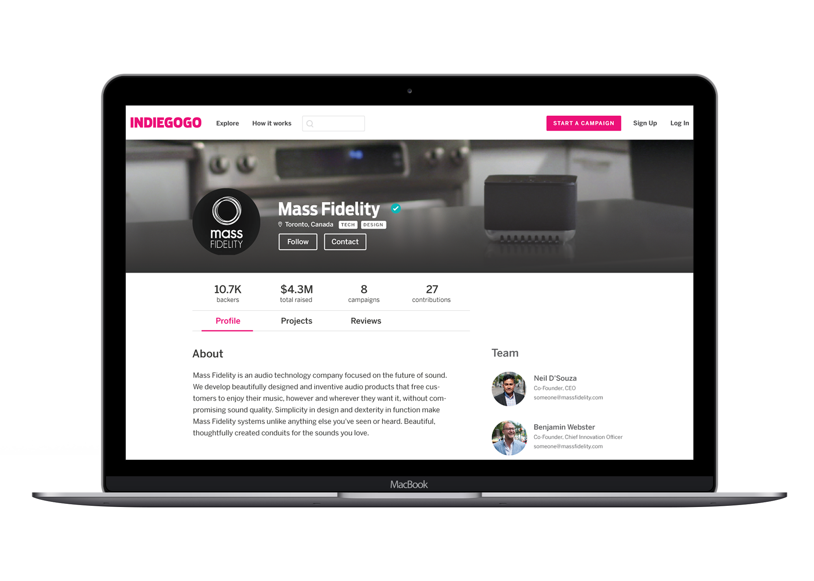
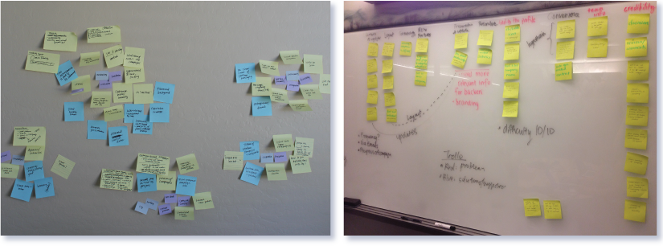
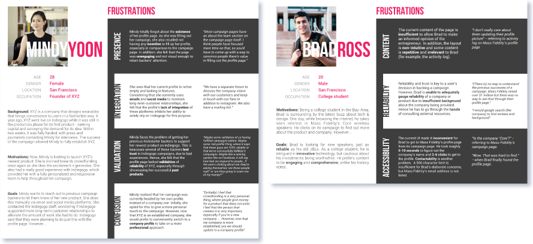
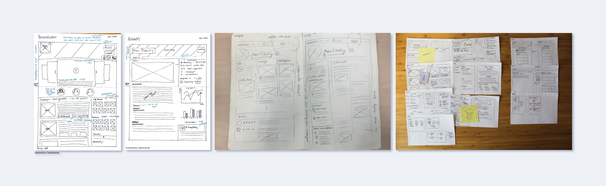
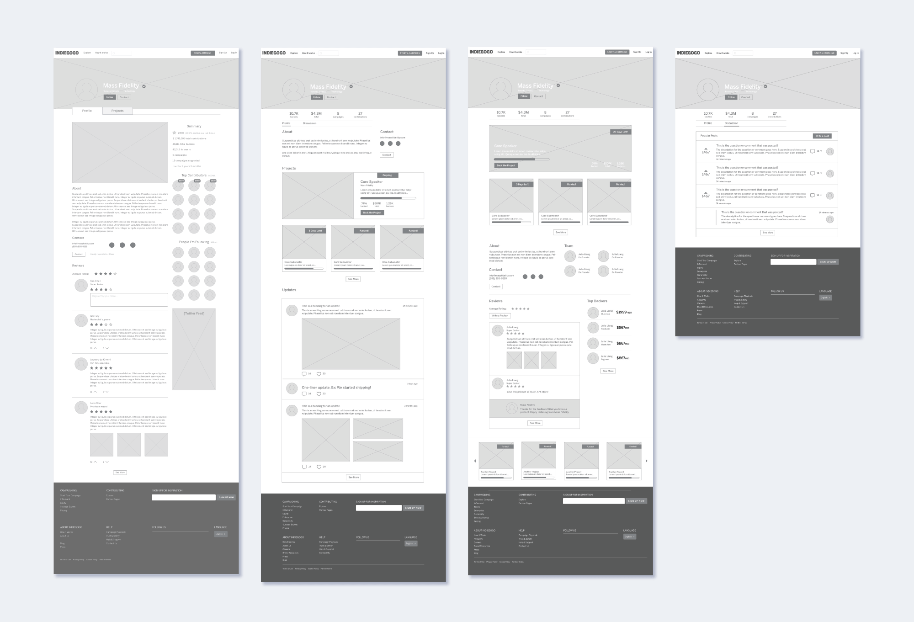
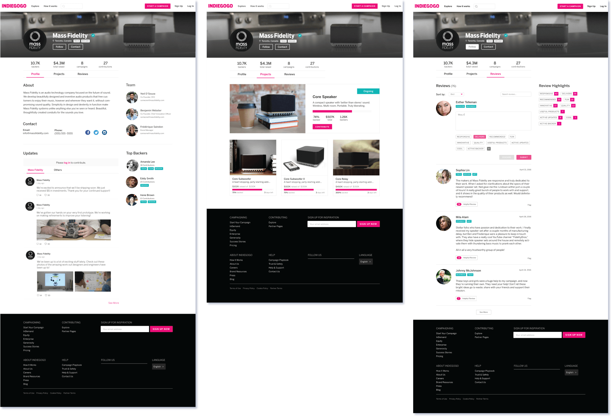
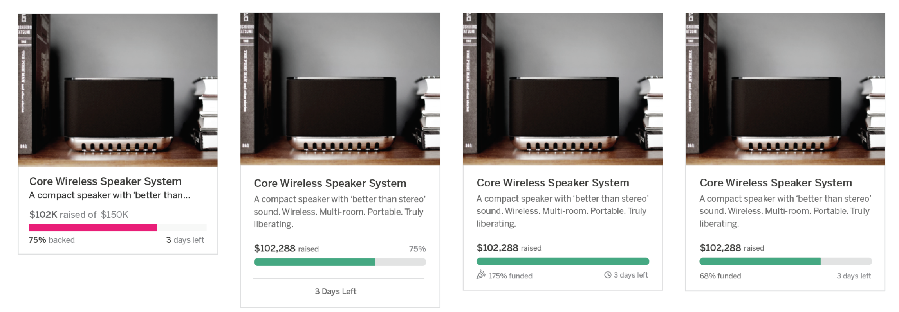
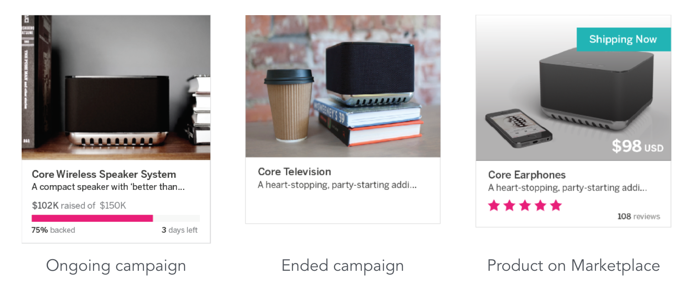
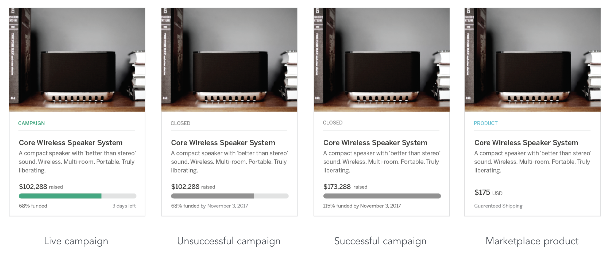
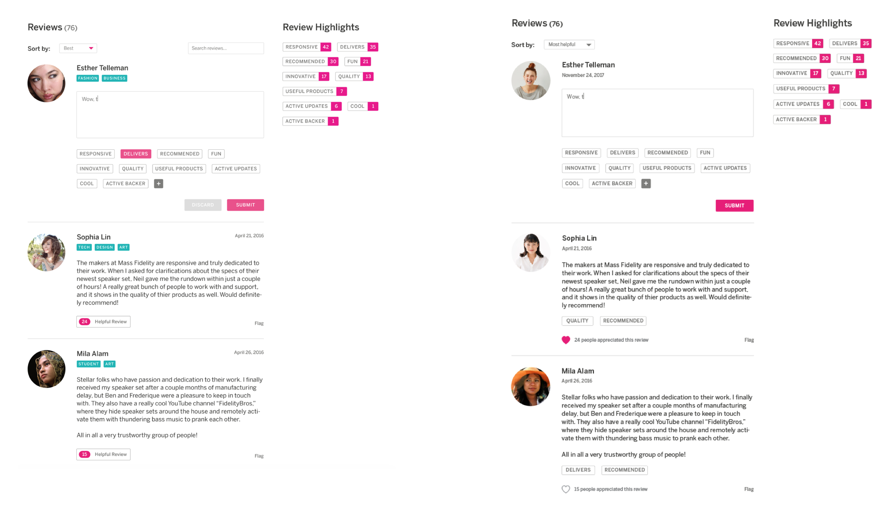

As Indiegogo, one of the largest crowd-funding platforms, grows, the platform is looking for opportunities to empower entrepreneurs and backers with longer-term connections.
I worked with Vanessa Ng, Ken Chen, and Jess Liu to re-design the profile page to reflect the entrepreneur's journey on the platform and create opportunities for backers who want to support the entrepreneur over the long term.
We worked in four sprints: (1) User Research, (2) Concept Development & Prototyping, (3) User Testing, and (4) High-Fidelity Presentation. I led the second sprint, turning user research insights into profile features and iterating on them. I created an asset library for wireframeing and delivered mid-fidelity mockups to the client with annotations explaining our design decisions.
We conducted research by interviewing backers on Indiegogo and entrepreneurs who have run at least one successful campaign on the platform. We discovered that people's main concerns with the current profile page include the page's ability to showcase an entrepreneur's reliability and activity, the page's capabilities for personalization, and its accessibility (currently, it is 3-6 clicks away from the campaign page).
After interviewing backers and entrepreneurs, we sorted our insights into categories to identify users' biggest needs from a profile page.
We constructed personas for backers and entrepreneurs based on our user research. Full personas can be seen here.
For the initial prototyping phase, we were asked to explore 3-6 different profile directions. Based on our insights from backers and entrepreneurs, we sketched profiles that focused on reliability, activity, personalization, and a fourth experimental one on the future of Indiegogo as a marketplace. I encouraged the team to sketch layouts and features separately so we could look for convergence in our designs. After this initial divergence phase, we converged on five main features for each page. For example, for the reliability page, we focused on financial and community presence statistics, reviews of the entrepreneur, display of past projects, top backers, and contact information.
We translated these sketches into mid-fidelity mockups, which we then presented to Indiegogo with annotations justifying each feature that we designed.
We reconnected with our original pool of entrepreneurs from our user research to get their feedback on the layouts and content. To supplement, we also ran unmoderated remote user testing on UserTesting.com.
After conducting user testing, we began to iterate on the layout of our profiles and some of the features on each. For example, after speaking with users, we realized that the product cards we designed needed to serve campaigns at all stages in the process, so we designed for additional edge cases. Another challenge we faced was designing the entrepreneur rating system. During testing, we discovered that people were unsure if the reviews were entrepreneur or campaign reviews, and Indiegogo challenged us to think about how we might help filter out angry spam-type reviews from meaningful ones that could help other backers.
In preparation for our high-fidelity work, we decided to merge the reliability and activity pages because we found that the focus of the two pages was converging on establishing trust between the entrepreneur and the backer. The marketplace and personalization pages were combined into a profile that focuses on establishing the entrepreneur's marketplace presence.
Our final sprint focused on constructing high-fidelity mockups of our profile pages. We let Indiegogo's brand guidelines dictate the styling.
High-fidelity mockups of the activity + reliability page
We visited the Indiegogo office to present our findings and designs to the design team. We're excited to see what Indiegogo might do with our research and designs!
Special thanks to Bianca for mentoring us through the project, Genevieve at Indiegogo for offering constructive feedback throughout the process, and Orly at Indiegogo for putting us in contact with entrepreneurs to interview!
Left to Right: Bianca Romulo, Jess Liu, Vanessa Ng, Julia Liang, and Ken Chen
After the project concluded, I continued to work on the visual designs for some of the features we created. I iterated on the campaign cards, making changes to the content, colors, iconography, and typography to make them easier to read and create a stronger sense of hierarchy.
After deciding on the final visual design, I designed cards to capture the possible states of a project, from a new campaign to a product on the marketplace.
 Finally, I iterated on the reviews concept and prototyped the final design. 